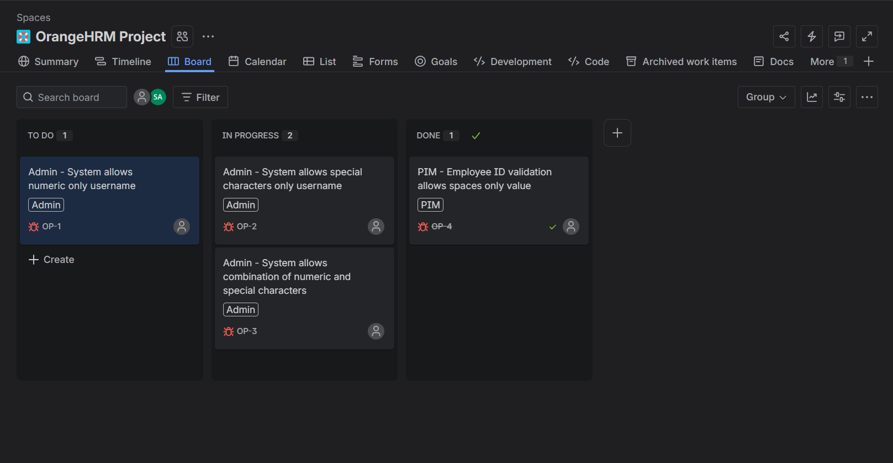
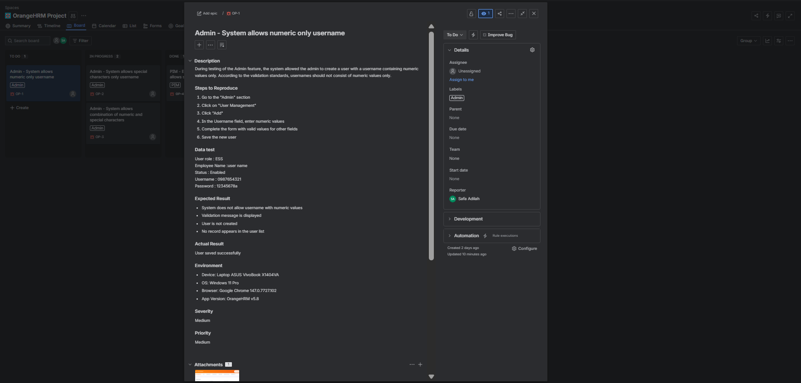
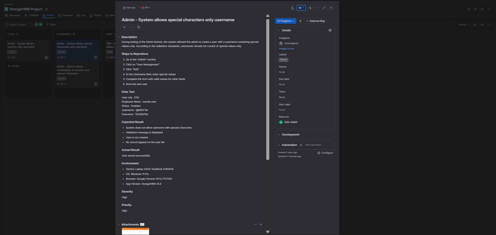
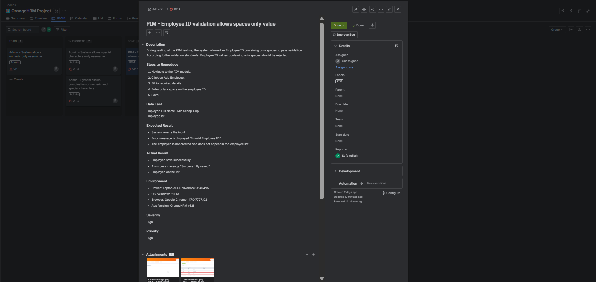

Portfolio Details




Manual Testing
Automation Testing
Web Testing
Test Case
Test Result
Bug Report
TestRail
Jira
Cypress
OrangeHRM Project
OrangeHRM is a web-based Human Resource Management (HRM) system used to manage employee data, leave requests, attendance, recruitment, and other HR operations.
In this project, focusing on manual testing and basic automation testing to ensure each feature functioned properly and met requirements.
- Needed to test multiple modules including Login, Admin, and PIM with different workflows and validations
- Required verification of role-based access in the Admin module to ensure proper user permissions
- Needed to validate employee data processes in the PIM module such as add, edit, search, and delete
- Manual login testing was repetitive and time-consuming during regression testing
- Basic automation testing for login required stable element handling and accurate result validation
- Created structured functional test cases for Login, Admin, and PIM features
- Performed positive, negative, and edge-case testing scenarios
- Verified role permissions and access restrictions in the Admin module
- Tested end-to-end employee data management in the PIM module
- Built a basic automation script to validate successful and unsuccessful login scenarios
- Used login automation to improve testing efficiency and reduce repetitive manual work
Testing Scope
- Functional testing for Login, Admin, and PIM modules
- Validation of login with valid and invalid credentials
- User management testing in Admin feature such as add, edit, delete, and role assignment
- Employee data management testing in PIM feature including add, update, search, and delete records
- Basic automation testing for login functionality
Tools and Technologies
- Chrome DevTools
- TestRail
- Jira
- Snipping Tool
- Cypress
- JavaScript
Key Findings
- Identified login validation issues such as incorrect error messages for invalid credentials
- Found issues in the Admin module related to user creation, search filters, and inconsistent form validation
- Detected issues in employee data management within the PIM module, including incomplete field validation
- Improved testing efficiency by implementing basic login automation using Cypress
Summary
Performed functional testing on OrangeHRM modules including Login, Admin, and PIM. Managed test cases using TestRail, reported defects in Jira, and used Chrome DevTools for UI validation. Additionally, created basic automation testing for login functionality using Cypress to improve efficiency in repetitive regression testing.